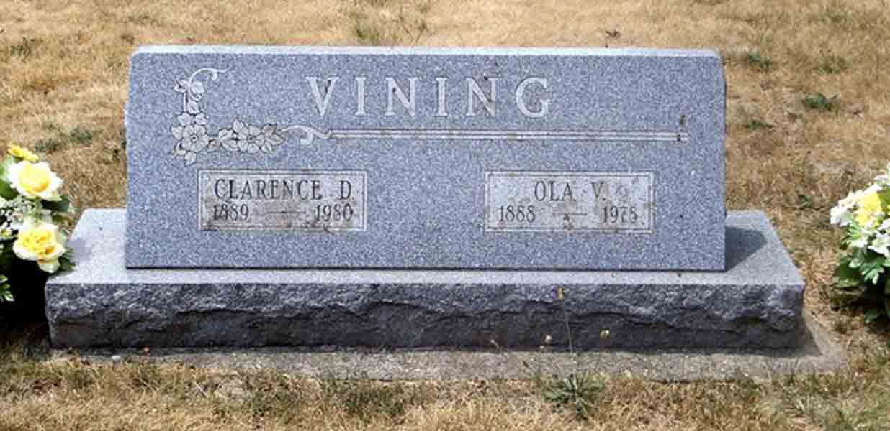

Census Data
| 1920 | 1930 | 1940 | |
| Clarence Delbert Vining | 30 | 40 | ? |
| Ola (Guy) Vining | 31 | 42 | ? |
| Eleanor Gene Vining | 5 | ? | |
| Lowell Guy Vining | 3 y., 2 m. | ? |


Death Data
Headstone of Clarence Delbert Vining and Ola Guy, in Etna Green East Cemetery, Etna Township, Indiana (from Find A Grave):